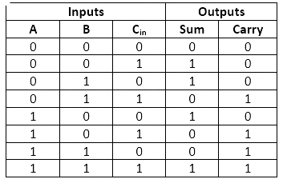

To detect both the SA0 and SA1 faults on the logic circuit that represents the carry function of a Full-Adder.
Fault is a logic level abstraction of a physical defect. It is used to describe the change in the logic function of a device caused by the defect. Fault abstractions reduce the number of conditions that must be considered in deriving tests.
A stuck-at fault (SAF) is a logic-level fault that mimics a manufacturing defect on a digital circuit. An SAF is of two types- stuck-at-0 (SA0) and stuck-at-1 (SA1) faults. Individual bit or signal on a wire of a logic gate is assumed to be stuck at Logical '1' or '0' if that bit or the signal is converted to logic-1 or logic-0 irrespective of its previous or assigned value.
Logical faults are used to represent physical faults. They simplify the fault analysis process and reduces the number of faults.
Full Adder is the adder which adds three inputs and produces two outputs. The first two inputs are A and B and the third input is an input carry as C-IN. The output carry is designated as C-OUT and the normal output is designated as S which is SUM
The truth table of the ullf adder is as shown below. The inputs are designated as A, B and Cin, while the S represents the sum output and the C represents the carry output.
For the full-adder circuit, we can easily verify the results by looking into the output and comparing them. But most chips aren’t that simple. We may need a memory element or a look-up table to store all the correct test results, which will be used in comparison during the testing process. This also increases the memory overhead exponentially with growing inputs.
The carry output is 0 unless both the inputs are 1. The S(sum) output represents the least significant bit of the addition operation.
The simplified Boolean expressions for the two outputs can be obtained directly from the truth table. They are:
S = A’ B’ C-IN + A’ B C-IN’ + A B’ C-IN’ + A B C-IN
C = AB + BC + AC
Fig - Full Adder
Step - 1: Give the input of C and C'. Here C and C' can be either 0 or 1.
Step - 2: Here C is the expected output, where as C' is the final output.
Step - 3:Click on the Check button to get the result on the truth table.
Step - 4:we get if there is a fault or not , if there is a fault it will show us which faults might have happened
Step - 5: For further simulation - repeat the above steps.